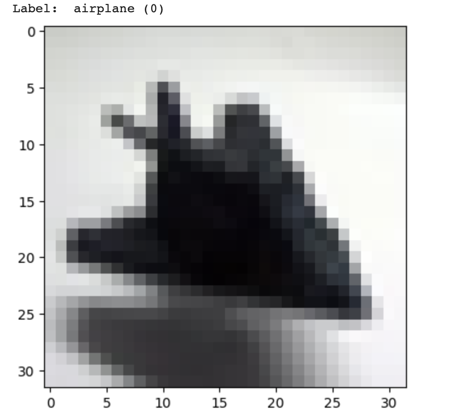
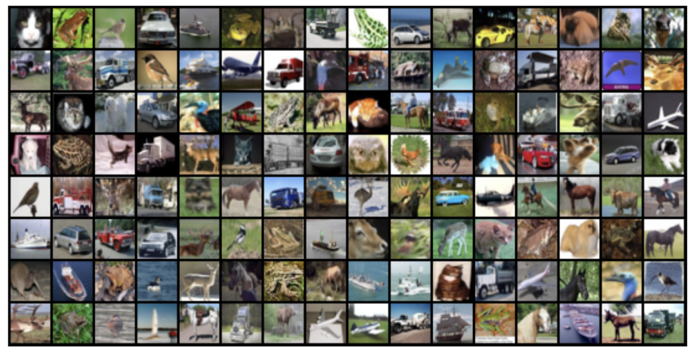
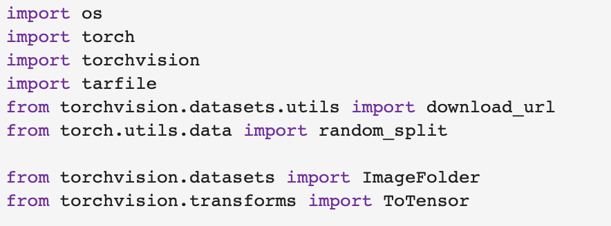
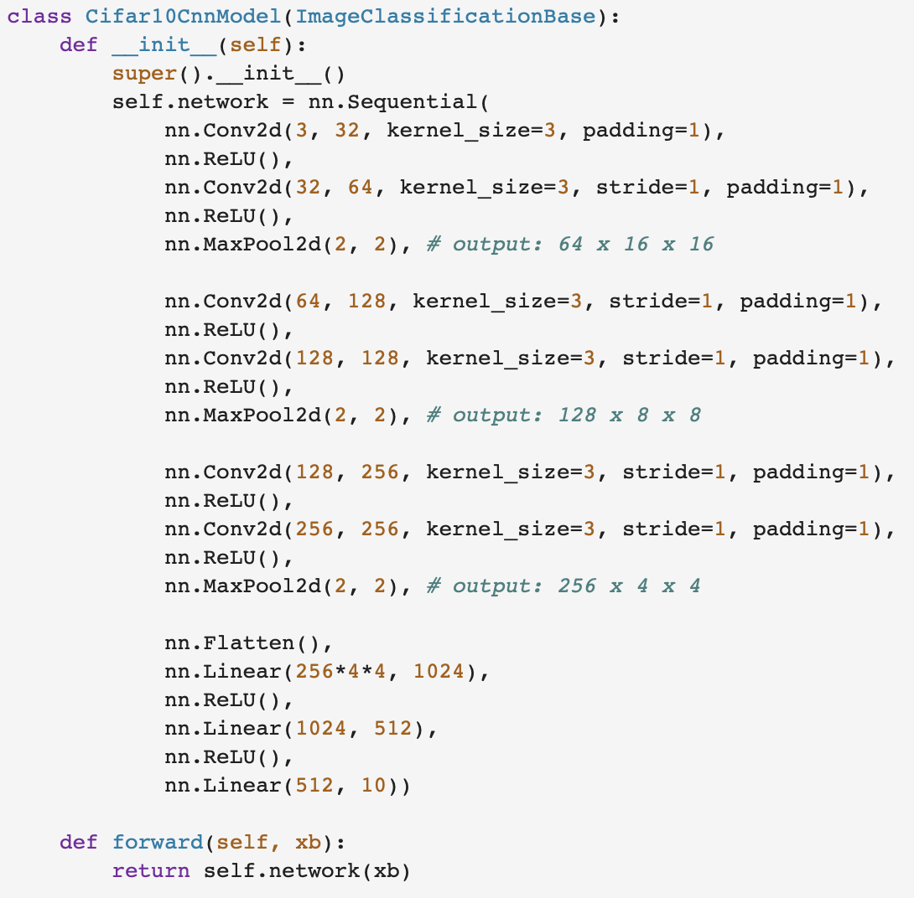
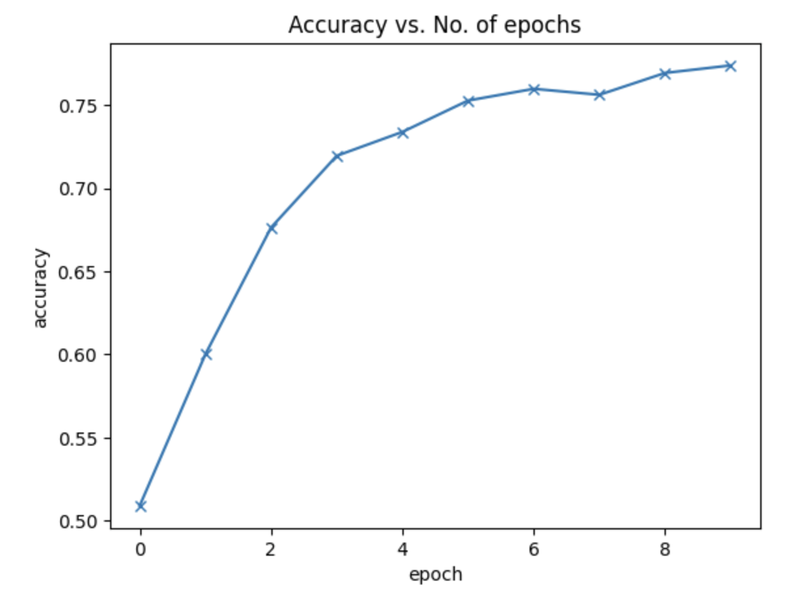
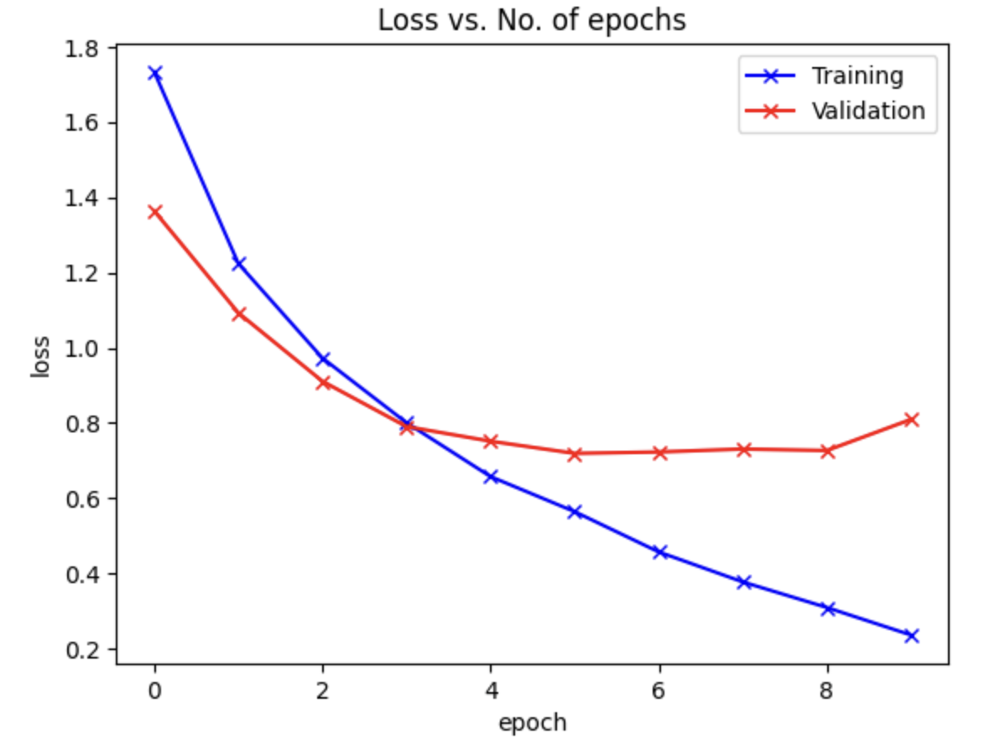
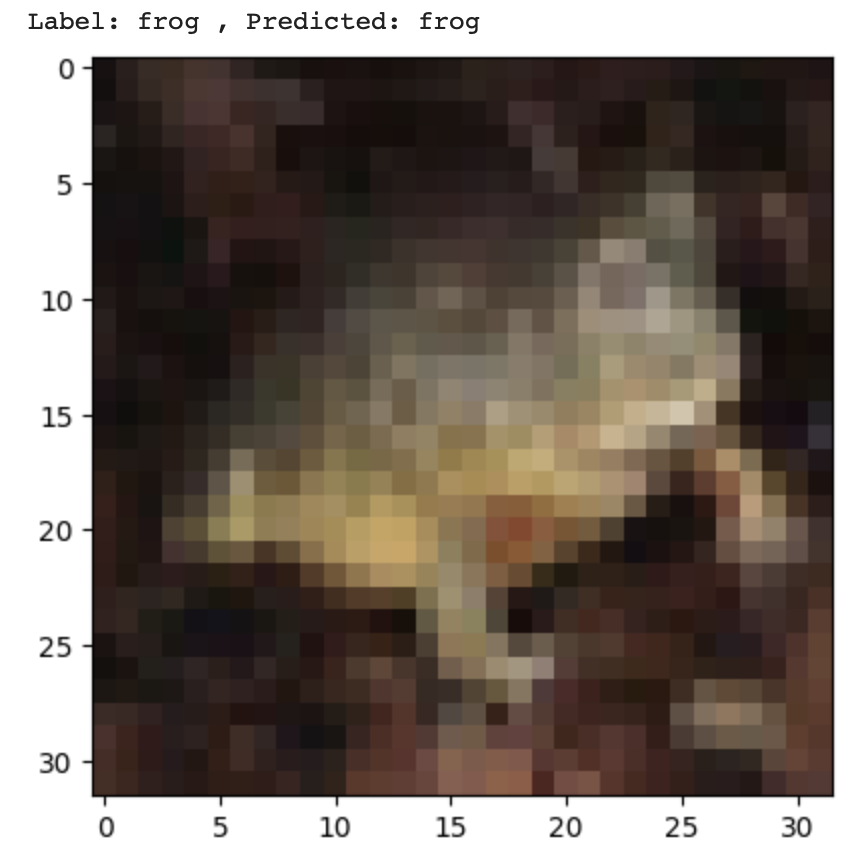

Image Classification on CIFAR-10 Dataset Using a CNN
This project is an exhaustive exploration of Convolutional Neural Networks (CNNs) for image classification, applied to the
CIFAR-10 dataset. Using PyTorch, the project delivers a complete lifecycle of constructing, training, evaluating, and
predicting with a CNN, achieving promising accuracies and providing opportunities for future enhancements.
-
Introduction and Background: CIFAR-10, a dataset comprising 50,000 color training images and 10,000 test images,
serves as the foundation for this project. With images distributed across 10 diverse classes, the dataset is a
popular benchmark in the field of computer vision.


-
Installation and Dependencies: The project relies on essential libraries such as NumPy, Matplotlib, Torch, and
Torchvision. While instructions are provided for manual installation, running the notebook on Google Colab
eliminates the need for any manual setup.

-
Data Preparation and Handling:
-
Data Sourcing: The CIFAR-10 data is retrieved from a dedicated URL, ensuring accessibility and consistency.
-
Data Splitting: The dataset is judiciously divided into training and validation sets, further refining the
training set to create a dedicated validation subset.
-
Batch Processing: Utilizing data loaders, the project facilitates batch-wise iteration over the data,
optimizing training efficiency.
-
Model Architecture and Design:
-
Convolutional Layers: The architecture consists of three repeating blocks, each containing two Convolutional
layers with ReLU activation, followed by a MaxPool2d layer.
-
Flattening: A Flatten layer is employed to reshape the output into a compatible form for subsequent processing.
-
Dense Layers: Three linear (or Dense) layers, with ReLU activation on the first two and no activation on the
last, finalize the architecture. The final output is a tensor representing the 10 class probabilities.

-
Training Process and Optimization:
-
Training Epochs: The model undergoes training for 10 epochs, providing a balanced trade-off between
learning and computational resources.
-
Adam Optimizer: Utilizing the Adam optimizer, the project ensures adaptive learning rate management and
efficient convergence.
-
Validation Loss Tracking: By monitoring validation loss, the model saves parameters corresponding to the
best performance, enhancing generalization.
-
Model Evaluation and Insights:
-
Validation and Test Performance: Rigorous evaluation on validation and test datasets reveals consistent
accuracies above 75%, indicating the model's robustness.
-
Prediction Functionality: A 'predict_image' function is included, allowing single-image predictions and
demonstrating the model's real-world applicability.



-
Conclusion and Future Directions: This project not only offers a practical and replicable implementation of a
CNN for CIFAR-10 classification but also highlights avenues for accuracy improvement. Whether through hyperparameter
tuning, data augmentation, or architectural modifications, the project opens doors to further exploration and
innovation.
-
Significance and Contributions: Beyond its technical aspects, the project serves as a comprehensive guide to CNNs,
covering the full spectrum from data preparation to model deployment. With meticulous explanations and a
well-crafted codebase, it stands as a valuable resource for learners, researchers, and professionals aiming to
delve into the world of image classification using deep learning.
Back to all projects